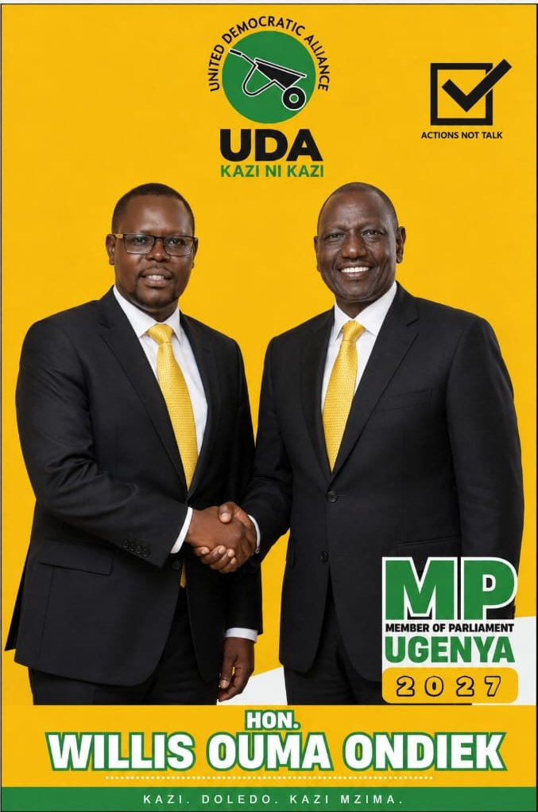

Our vision
A connected, capable and united Ugenya.
Campaign vision wording is a working draft and requires candidate confirmation.
Ugenya Constituency
Willis Ouma Ondiek
A campaign centred on practical priorities, shared progress and a united Ugenya.

Meet the candidate
Popularly known as AWILO, Willis Ouma Ondiek is a candidate for Member of Parliament for Ugenya Constituency.
This campaign is built around five clear areas of focus: roads, education, healthcare, jobs and opportunity, and community unity. Additional biography, experience and personal background will be published after candidate confirmation.
Candidate biography, portrait and personal statement are awaiting approval before publication.
Our vision
Campaign vision wording is a working draft and requires candidate confirmation.
Our mission
Campaign mission wording is a working draft and requires candidate confirmation.
The five priorities
These focus areas are drawn from the supplied campaign material. Detailed commitments require candidate approval.
Make local connectivity and mobility a core campaign focus.
DETAILS TO BE CONFIRMEDPlace learning and opportunity for young people at the heart of the agenda.
DETAILS TO BE CONFIRMEDKeep accessible, community-centred healthcare among Ugenya’s priorities.
DETAILS TO BE CONFIRMEDFocus on pathways for livelihoods, enterprise and local potential.
DETAILS TO BE CONFIRMEDBring people together around shared priorities and progress.
DETAILS TO BE CONFIRMEDA detailed manifesto will be published after candidate approval.
Ugenya first
This campaign is intended to engage communities throughout Ugenya. Ward-level priorities, listening-tour dates and community submissions will be added only after campaign confirmation.
Share a community priority →Ward names, local campaign offices and field contacts are awaiting campaign verification.
On the ground
Verified news and campaign activity will appear here.

Event details and the candidate’s remarks will be published after campaign confirmation.

Verified context for this campaign photograph will be added before publication.

A campaign message supporting candidates sitting national examinations.
Meet AWILO
Official date, time and venue will be announced after campaign confirmation.
Official date, time and venue will be announced after campaign confirmation.
Campaign moments
A selection of supplied campaign materials and moments.


Be part of it
Register your interest in volunteering. This demonstration form opens an email draft and does not store your information.
Get in touch